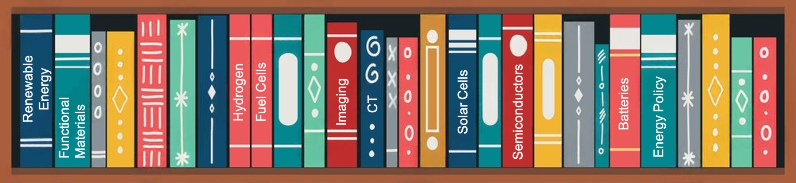
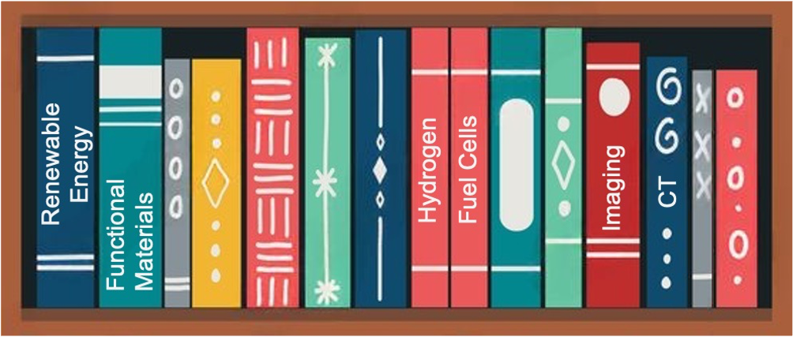
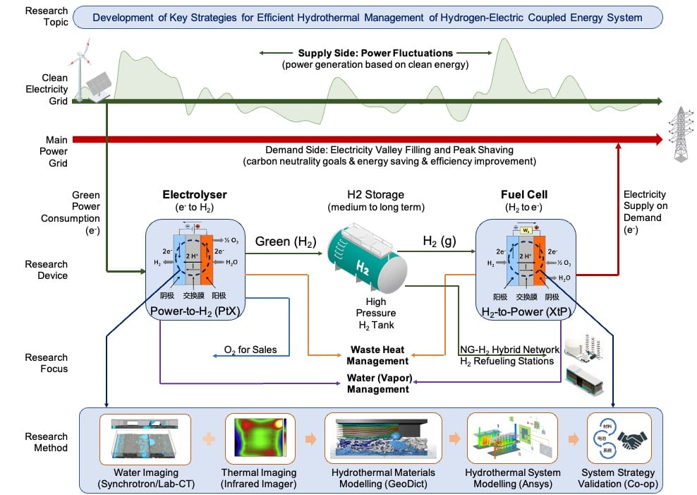

Tổng quan nghiên cứu
Hệ thống năng lượng carbon thấp hydro - điện hướng lưới và hiệp đồng

Ấn phẩm
- Năng lượng tái tạo / Điện hóa:
-
S. N. Artigas, H. Từ* [FDB], F. Mack
Ứng dụng phân tích phân bố thời gian thư giãn làm công cụ chẩn đoán tại chỗ cho quản lý nước trong pin nhiên liệu PEM [J]
Hợp tác:[Tập đoàn Freudenberg] | Được trích dẫn bởi:[Đại học Thanh Hoa]
2024 | J. Power Sources [PDF] -
H. Từ* [PSI], M. Bührer, F. Marone, Prof. T. J. Schmidt, F. N. Büchi, J. Eller
Ảnh hưởng của vật liệu nền lớp khuếch tán khí đến quản lý nước trong PEFC: Phần II. Khử bão hòa nước lỏng tại chỗ bằng bay hơi [J]
Hợp tác:[Nguồn sáng Thụy Sĩ/PSI] | Được trích dẫn bởi:[Tập đoàn Toyota Motor] [Bosch, Đức]
2022 | J. Electrochem. Soc. [PDF] -
S. van Rooij, M. Magnini, A. Mularczyk, H. Từ* [PSI], F. N. Büchi [PSI], Prof. S.
Haussener
[EPFL]
Truyền nhiệt dẫn trong lớp khuếch tán khí bão hòa một phần có làm mát bay hơi [J]
Hợp tác:[Nguồn sáng Thụy Sĩ/PSI] [EPFL]
2022 | J. Electrochem. Soc. [PDF] -
H. Từ* [PSI], S. Nagashima [Toyota], H. Nguyen, K. Kishita, F. Marone, F. N. Büchi, J.
Eller
[PSI]
Cơ chế vận chuyển nước phụ thuộc nhiệt độ trong lớp khuếch tán khí PEFC được làm sáng tỏ bằng hiển vi chụp cắt lớp tia X operando dưới giây [J]
Hợp tác:[Tập đoàn Toyota Motor] | Được trích dẫn bởi:[Bosch, Đức] [Đại học Thanh Hoa] [Đại học Toronto]
2021 | J. Power Sources [PDF] -
H. Từ* [PSI], M. Bührer, F. Marone, Prof. T. J. Schmidt [ETH], F. N. Büchi, J. Eller
[PSI]
Ảnh hưởng của vật liệu nền lớp khuếch tán khí đến quản lý nước trong PEFC: Phần I. Độ bão hòa nước lỏng operando và đặc tính khuếch tán khí [J]
Hợp tác:[Nguồn sáng Thụy Sĩ/PSI] | Được trích dẫn bởi:[Trung tâm Hàng không Vũ trụ Đức] [Tập đoàn Toyota Motor] [Đại học Thanh Hoa]
2021 | J. Electrochem. Soc. [PDF] -
C. Csoklich, H. Từ* [PSI], F. Marone, Prof. T. J. Schmidt [ETH], F. N. Büchi [PSI]
Lớp khuếch tán khí cấu trúc laser nhằm cải thiện vận chuyển nước và hiệu năng pin nhiên liệu [J]
Hợp tác:[Nguồn sáng Thụy Sĩ/PSI] | Được trích dẫn bởi:[Viện Công nghệ Tokyo] [Đại học Khoa học và Công nghệ Hồng Kông] [Đại học Thanh Hoa]
2021 | ACS Appl. Energy Mater. [PDF] -
Y. Nagai [Toyota], J. Eller, T. Hatanaka, S. Yamaguchi, S. Kato, F. Marone, H. Từ*
[PSI], F. N.
Büchi
Cải thiện quản lý nước trong pin nhiên liệu bằng biến đổi lớp vi xốp: tạo ảnh chụp cắt lớp operando nhanh của nước lỏng [J]
Hợp tác:[Tập đoàn Toyota Motor] | Được trích dẫn bởi:[Viện Công nghệ Massachusetts] [Trung tâm Hàng không Vũ trụ Đức] [Tập đoàn Đầu tư Điện lực Nhà nước Trung Quốc]
2019 | J. Power Sources [PDF]
- Tạo ảnh tính toán / Học sâu
-
M. Bührer, H. Từ* [PSI], A. Hendriksend, F. N. Büchi, J. Eller, Prof. M. Stampanoni
[ETH],
F. Marone [SLS]
Phân loại quá trình động dựa trên học sâu trong XTM phân giải theo thời gian [J]
Đồng tác giả:[Nguồn sáng Thụy Sĩ/PSI] [Trung tâm Toán học và Khoa học Máy tính Amsterdam] | Được trích dẫn bởi:[Đại học Stanford] [Đại học Kỹ thuật RWTH Aachen]
2021 | Scientific Reports [PDF] -
M. Bührer, H. Từ* [PSI], J. Eller, Prof. J. Sijbers, Prof. M. Stampanoni [ETH],
F. Marone [SLS]
Làm rõ động lực học nước trong pin nhiên liệu từ dữ liệu hiển vi chụp cắt lớp phân giải theo thời gian [J]
Đồng tác giả:[Nguồn sáng Thụy Sĩ/PSI] [Đại học Antwerp] | Được trích dẫn bởi:[Đại học Tokyo] [Đại học Toronto]
2021 | Scientific Reports [PDF] -
H. Từ* [PSI], M. Bührer, F. Marone, Prof. T. J. Schmidt [ETH], F. N. Büchi, J. Eller
[ETH]
Khử nhiễu ảnh tối ưu cho XTM operando của nước lỏng trong lớp khuếch tán khí PEFC [J]
Đồng tác giả:[Nguồn sáng Thụy Sĩ/PSI] | Được trích dẫn bởi:[Viện Hóa học Vật lý Đại Liên, Viện Hàn lâm Khoa học Trung Quốc] [Đại học Toronto] [Đại học College London]
2020 | J. Electrochem. Soc. [PDF] -
H. Từ* [PSI], F. Marone, S. Nagashima, H. Nguyen, K. Kishita, F. N. Büchi, J. Eller
(Báo cáo mời) Khám phá tạo ảnh XTM dưới giây và dưới micromet của nước lỏng trong GDL PEFC [J]
Đồng tác giả:[Nguồn sáng Thụy Sĩ/PSI] [TOYOTA] | Được trích dẫn bởi:[Cơ sở Bức xạ Synchrotron châu Âu] [Trung tâm Nghiên cứu Pin nhiên liệu Quốc gia Hoa Kỳ] |[Giải hỗ trợ đi lại dự hội nghị ECS]
2019 | ECS Transactions [PDF] -
H. Từ* [PSI], M. Bührer, F. Marone, Prof. T. J. Schmidt [ETH], F. N. Büchi, J. Eller
[PSI]
Đối mặt với nhiễu: hướng tới giới hạn của hiển vi chụp cắt lớp tia X PEFC dưới giây [J]
Đồng tác giả:[Nguồn sáng Thụy Sĩ/PSI] | Được trích dẫn bởi:[Phòng thí nghiệm Quốc gia Argonne] [TOYOTA] |[Nguồn sáng Thụy Sĩ] |[Giải áp phích xuất sắc ModVal]
2017 | ECS Transactions [PDF]
- Khoa học vật liệu / Kỹ thuật hóa học
-
Prof. H. Zhang, R. Wu, H. Từ* [BJTU], F. Li, S. Wang, J. Wang [BJUT], T. Zhang
Tổng hợp bằng phản ứng phun và đặc trưng các vi cầu SnO2 xốp phân cấp cho pin mặt trời nhạy quang thuốc nhuộm hiệu suất cao [J]
2017 | RSC Advances [PDF][BJTU] -
Prof. H. Zhang [BJTU], H. Từ* [BJTU], J. Wan, Prof. L. Yan, C. Dai
Chế tạo bột cầu oxit xốp mới bằng kỹ thuật phản ứng phun [J]
2012 | Vacuum and Cryogenics [Liên kết][BJTU] -
Q. Xiaoyue, H. Từ* [BJTU], X. Zhou
Phân hủy cypermethrin hoạt tính cao bằng chiếu siêu âm kết hợp quang xúc tác TiO2
2012 | Chemistry Research [Liên kết][BJTU]
Bằng sáng chế
- Bằng sáng chế châu Âu:
-
Phương pháp mới (bảo mật)
Nhà sáng chế: H. Từ và cộng sự
2025 | Bằng sáng chế EU: đang chờ cấp, đã nộp đơn tại Văn phòng Sáng chế châu Âu (EPO) -
Vật liệu mới (bảo mật)
Nhà sáng chế: H. Từ và cộng sự
2025 | Bằng sáng chế EU: đang chờ cấp, đã nộp đơn tại Văn phòng Sáng chế châu Âu (EPO)
- Bằng sáng chế Trung Quốc:
-
Thiết bị tách từ tính kiểu jig giao diện khí-lỏng vòng [P]
Nhà sáng chế: Prof. M. Fu, Prof. H. Zhang, H. Từ (BJTU), Prof. L. Yan
2013 | Bằng sáng chế Trung Quốc số: CN102441489B, được cấp ngày 11 tháng 10 năm 2013. [Văn bằng] -
Thiết bị tách từ tính kiểu jig giao diện khí-lỏng vòng vận hành liên tục [P]
Nhà sáng chế: Prof. H. Zhang, H. Từ (BJTU), Prof. M. Fu, Prof. L. Yan
2013 | Bằng sáng chế Trung Quốc số: CN102441490A, được cấp ngày 1 tháng 11 năm 2013. [Văn bằng] -
Thiết bị làm sạch rau quả kết hợp siêu âm - oxy hóa quang xúc tác [P]
Nhà sáng chế: X. Zhou, H. Từ (BJTU), Prof. H. Jiang, X. Qi
2012 | Bằng sáng chế Trung Quốc số: CN202311136U, được cấp ngày 9 tháng 5 năm 2012. [Văn bằng]
Báo cáo kỹ thuật
-
H. Từ [TUM], Dr. B. Vinçon-Leite, Y. Luo
Mô hình hóa động lực học vi khuẩn lam cho hồ chứa YuQiao tại Thiên Tân, Trung Quốc [R]
2016 | Báo cáo đào tạo.[Trường Cầu đường ParisTech] &[Trường Bách khoa Paris] . Paris, Pháp. -
H. Từ [UR1], Dr. W. Lu, Dr. A. Madsen, Prof. S. Di Matteo
Thiết kế và xây dựng bệ thử cho đường phân tách và trễ tại Cơ sở Laser Electron Tự do châu Âu (European XFEL) [R]
2015 | Báo cáo thực tập.[Cơ sở Laser Electron Tự do châu Âu] , Hamburg, Đức. [PDF]
Nghiên cứu phân tích vốn chủ sở hữu
- Nghiên cứu vĩ mô ngành (Khu vực Đại Trung Hoa):
2022 | Ngành năng lượng mới: Động lực thúc đẩy khởi nghiệp trong ngành năng lượng mới của Trung Quốc dưới chính sách carbon kép
2020 | Ngành vật liệu mới: Chuỗi chuyên đề vật liệu bán dẫn, phần 4: 5G thúc đẩy chuỗi ngành truyền thông quang học, vật liệu phosphide indium sẵn sàng tăng trưởng
- Nghiên cứu thị trường sơ cấp (Doanh nghiệp được tài trợ vòng A đến D):
2021 | UISEE Technology: Báo cáo chuỗi doanh nghiệp tiên phong về UISEE Technology: nhà cung cấp giải pháp lái xe tự hành đa bối cảnh
2021 | SemiDrive Technology: Báo cáo chuỗi doanh nghiệp tiên phong về SemiDrive Technology: nhà cung cấp chip IP tự hành cho xe thông minh
2021 | Xi'an ESWIN Semiconductors: Báo cáo phân tích nghiên cứu về Xi'an ESWIN Semiconductors
- Nghiên cứu thị trường thứ cấp (Công ty niêm yết cổ phiếu A và Hoa Kỳ):
2021 | National Silicon Industry (688126.SH): Doanh nghiệp tiên phong về tấm wafer silicon cỡ lớn, thúc đẩy nội địa hóa chip (Báo cáo khởi đầu)
2021 | CREE (NASDAQ:CREE): Báo cáo chuỗi doanh nghiệp tiên phong về CREE: nhà cung cấp toàn cầu thiết bị công suất/RF và LED (cổ phiếu Hoa Kỳ)
2021 | Jingwei Hirain (688326.SH): Báo cáo chuỗi doanh nghiệp tiên phong về Jingwei Hirain Technology: nhà cung cấp dịch vụ hệ thống công nghệ điện tử ô tô
2020 | TankeBlue (870013.OC): Nhà sản xuất wafer SiC nội địa hàng đầu
2020 | Hangzhou Li-on Microelectronics (605358.SH): Thị trường thay thế nội địa rộng lớn, công nghiệp hóa wafer silicon cỡ lớn sắp bứt phá
2020 | Shandong Sinocera (300285.SZ): Ngành vật liệu gốm nha khoa, triển vọng thuận lợi cho vật liệu zirconia
Bộ dữ liệu công khai
-
TomoBank: Bộ dữ liệu tạo ảnh tia X của pin nhiên liệu
Người quản lý dữ liệu: M. Bührer, H. Từ* [PSI], F. Marone
2019 | Bộ Năng lượng Hoa Kỳ - Phòng thí nghiệm Quốc gia Argonne © Bản quyền. Phiên bản f4253f55. [Liên kết]
Trợ giảng
-
Công nghệ năng lượng tái tạo II, lưu trữ và chuyển đổi năng lượng
ETH Zürich, Học phần thạc sĩ (529-0191-01L )
2017-2019 | Học kỳ mùa xuân [Liên kết]
Hội nghị
- Điện hóa / Vật lý / Khoa học vật liệu:
-
H. Từ [PSI], M. Bührer, F. Marone, T. J. Schmidt, F. N. Büchi, J. Eller
Ảnh hưởng của phân bố kích thước lỗ xốp đến độ bão hòa nước lỏng operando trong GDL.
2019 | Hội nghị lần thứ 236 của Hội Điện hóa (ECS), Atlanta, Hoa Kỳ. [Diễn giả] [Liên kết] -
H. Từ [PSI], M. Bührer, F. Marone, T. J. Schmidt, F N. Büchi, J. Eller
Những tiến bộ trong tạo ảnh chụp cắt lớp tia X operando 10 Hz của nước trong GDL của PEFC.
2018 | Hội nghị quốc tế lần thứ 8 về Cơ sở và Phát triển pin nhiên liệu (FDFC), Nantes, Pháp. [Diễn giả] [Liên kết] -
H. Từ [PSI], M. Bührer, F. Marone, T. J. Schmidt, F N. Büchi, J. Eller
Nghiên cứu phân bố nước trong lớp khuếch tán khí của PEFC bằng hiển vi chụp cắt lớp tia X
2018 | Hội nghị thường niên lần thứ 69 của Hội Điện hóa Quốc tế (ISE), Bologna, Ý. [Áp phích] [Liên kết] -
H. Từ [PSI], M. Bührer, F. Marone, T. J. Schmidt, F N. Büchi, J. Eller
Phân bố nước trong lớp khuếch tán khí của PEFC: nghiên cứu bằng hiển vi chụp cắt lớp tia X
2018 | Hội thảo lần thứ 15 về Mô hình hóa và Kiểm chứng thực nghiệm pin nhiên liệu (ModVal), Aarau, Thụy Sĩ. [Giải áp phích xuất sắc] [Liên kết] -
H. Từ [PSI], M. Bührer, F. Marone, T. J. Schmidt, F. N. Büchi, J. Eller
Định lượng khả năng phát hiện đặc trưng trong hiển vi chụp cắt lớp tia X dưới giây của PEFC.
2017 | Diễn đàn châu Âu lần thứ 6 về PEFC và thiết bị điện phân (EFCF), Lucerne, Thụy Sĩ. [Diễn giả] [Liên kết] -
H. Từ [PSI], M. Bührer, F. Marone, T. J. Schmidt, F. N. Büchi, J. Eller
Đánh giá tỷ lệ tương phản trên nhiễu trong tạo ảnh chụp cắt lớp tia X của nước trong pin nhiên liệu điện phân polyme
2017 | Hội thảo lần thứ 14 về Mô hình hóa và Kiểm chứng thực nghiệm pin nhiên liệu (ModVal), Karlsruhe, Đức. [Áp phích] [Liên kết] -
H. Từ [TUM], E. Metwalli, P. Müller-Buschbaum
Copolyme diblock đáp ứng nhiệt có nhúng hạt nano cho ứng dụng cảm biến từ.
2016 | Hội nghị thường niên của dự án Erasmus MaMaSELF thuộc Liên minh châu Âu, núi Rigi, Thụy Sĩ. [Diễn giả] [Liên kết] -
H. Từ [TUM], E. Metwalli, P. Müller-Buschbaum
Tính chất từ và cấu trúc của màng mỏng nanocompozit polystyrene-block-poly(N-isopropylacrylamide)/oxit sắt đáp ứng nhiệt.
2016 | Hội nghị thường niên lần thứ 80 của Hội Vật lý Đức và Hội nghị mùa xuân DPG (DPG), Regensburg, Đức. [Áp phích] [Liên kết] -
H. Từ [BJTU], Prof. H. Zhang, R. Wu
Vi cầu SnO2 mao quản trung bình: tổng hợp, đặc trưng và ứng dụng trong pin mặt trời nhạy quang thuốc nhuộm hiệu suất cao và pin lithium.
2013 | Hội thảo Tiền duyên Hạt năng lượng của Đại học Thanh Hoa, Bắc Kinh, Trung Quốc. [Áp phích] [Liên kết]